本章主要内容
在之前的章节中，我们通过为每个线程创建std::thread
对象来显式管理线程。在一些应用场合，你会发现这不是你所需要的，因为你必须管理线程对象的生命周期，决定适合问题和硬件的线程数量等。一个理想的方案是，你只需要将代码划分可以被并发执行的若干小片，将他们传递给编译器和运行库，然后告诉编译器“并行化这些代码来得到较优的性能”。
另外一个反复出现的场景是你可能使用几个线程来求解一个问题，但是要求它们在满足一定条件的时候提前结束。这有可能是因为结果已经被求解出来，或者因为有错误发生，甚至是因为用户显式要求操作被放弃。不管什么原因，线程需要被发送“请停止”信号，这样它们可以放弃赋予它们的任务，尽快的清理自己的环境，然后停止运行。
在本章中，我们会从自动管理线程数量和线程之间的任务划分开始介绍管理线程和任务的机制。
在许多公司，员工通常在办公室上班。但是有时候员工需要出差去访问客户或者供应商，参加一个交易展览或者会议。虽然这些出差是必须的，并且在某些天有好几个人同时需要出差，但是对于具体某个员工来说，不同出差的时间间隔可能是几个月甚至几年。为每个员工都配置一辆车是非常昂贵的或者不切实际的，因此公司通常都提供一个汽车池 。汽车池有一定数量的汽车，供公司的所有员工出差使用。当公司的员工需要出差时，他们在合适的时间向汽车池申请一辆汽车。当出差回来的时候，员工将汽车归还给汽车池。如果汽车池中没有可用的汽车，员工需要重新规划自己出差的行程。
线程池 是一个类似的思想，不过其中共享的是线程 而不是汽车。在大多数系统上面，为每个可以与其他任务并行执行的任务分配一个单独的线程是不切实际的。但是可以尽量充分利用硬件提供的并发性。线程池允许你利用这一点。可以被并发执行的任务被提交到线程池中，在线程池中被放入一个等待队列。每个任务会被某个工作线程从等待队中取出来执行。工作线程的任务就是当空闲的时候从等待队中取出任务来执行。
建立一个线程池有几个关键设计问题，比如在线程池中创建几个工作线程 ，将任务高效分配给工作线程的方法以及是否可以等待某个任务的完成等。在这个小节中，我们会提出一些实现来解决这些问题，我们将从最简单的线程池开始。
线程池最简单的形式是含有一个固定数量的工作线程
（典型的数量是std::thread::hardware_concurrency()
的返回值）来处理任务。当有任务要处理的时候，调用一个函数将任务放到等待队列中。每个工作线程都是从该队列中取出任务，执行完任务之后继续从等待队列取出更多的任务来处理。在最简单的情况，没有办法来等待一个任务完成。如果需要有这样的功能，则需要用户自己维护同步。
清单9.1给出了一个最简单的线程池的示例实现。
清单9.1 简单的线程池
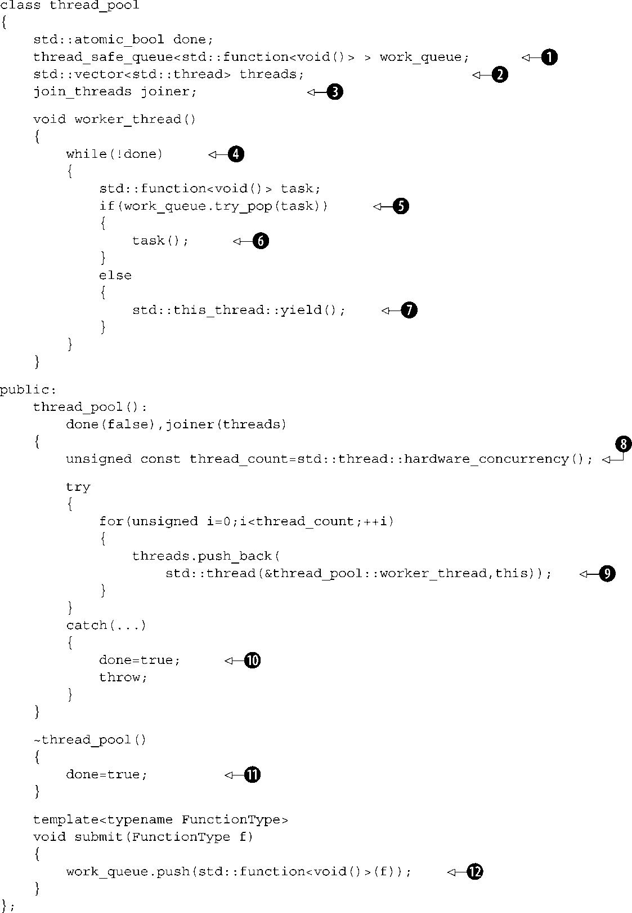
这个实现使用一个向量来保存工作线程➋，使用一个第6章中线程安全的队列➊来管理待处理的任务。在这个实现中，用户不能等待任务，也不能返回任何值。所以你可以使用std::function<void()>
来封装你的任务。函数submit()
将任何函数或者能够调用的对象包装成为std::function<void()>
实例，然后放到队列中⓬。
工作线程是在构造器中创建的，用户使用std::thread::hardware_concurrency()
来告诉用户硬件支持的并发线程数量❽，然后创建同样数量的线程来执行worker_thread()
成员函数➒。
创建一个线程可能会失败，然后抛出一个异常，所以你需要保证你已经创建的任何线程都能够非常合适的停止并且清理掉。这个功能是通过一个try-catch
块来完成的。当异常出现的时候设置done
标志➓，在另外一边第8章的join_threads
➌的一个实例被用来等待所有工作线程的结束。这也可以在析构函数中完成，只要设置done
标志⓫，join_threads
实例会保证在线程池被销毁前所有线程已经完成。注意成员变量声明的顺序是重要的，done
标志跟work_queue
必须声明在threads
向量前面，threads
向量必须声明在joiner
前面。这个顺序保证所有成员会被正确的销毁掉。例如，在所有线程停止之前工作线程队列不能被安全的销毁。
函数worker_thread
的实现非常简单。它包含一个循环等待直到done
标志碑设置➍，不停的从队列中取出任务➎，然后执行它们➏。如果队列中没有任务，它会调用std::this_thread::yield()
暂停一小段时间➐，在下次执行前给其他线程一个机会往队列中添加任务。
在许多情况下，这样一个简单的线程池是足够用了，特别是如果所有任务是完全独立的并且不返回任何值或者执行一些阻塞的操作。但是存在许多简单线程池无法满足用户需求的情况，在这些情况下可能会引起一些问题，比如死锁。在简单情况下，用户像第8章的例子一样使用std::async
可能会得到更好的解决办法。在本章中，我们会使用一些更加复杂的线程池实现来提供额外的特征来解决用户需要的或者减少潜在的问题。首先是等待一个我们提交的任务。
第8章的例子都是显式的创建线程。在划分任务给线程后，主线程总是等待创建的线程结束来保证在返回给调用者之前所有任务都已经完成了。使用线程池之后，你需要等待提交到线程池的任务
结束，而不是等待工作线程。这一点跟第8章中基于std::async
的例子有点相似。但是在清单9.1实现的线程池中，你必须人为的使用第4章中的条件变量等来实现这一点。这会增加代码的复杂性。如果能够直接等待任务结束会更好。
通过将复杂度移到线程池中，可以直接等待任务的结束。可以让submit()
函数返回一个任务句柄，利用这个句柄可以等待任务结束。这个任务句柄包装了条件变量或者其他来简化使用线程池的代码。
作为一个特别的例子，当主线程需要任务计算的结果的时候，主线程不得不等待任务的结束。这样的例子一直在本书中出现，比如第2章的parallel_accumulate
函数。在这个例子中，你可以通过使用std::future
来等待线程的结束，然后组合每个线程的结果。清单9.2展示了允许你等待任务结束和传递返回值到等待的线程需要对简单线程池做的修改。因为std::packaged_task<>
的实例只是可移动
的，而不是可复制
的，不再能够用std::function<>
来作为队列中的元素，因为std::function<>
要求存储的函数对象是可以拷贝和构造的。因此，必须使用一个定制的函数包装来处理只能移动的类型。这是一个简单的带有一个调用操作符的类。因为只需要处理不带有参数并且返回void
的函数，所以用了很直观的虚调用来实现。
清单9.2 有等待任务的线程池
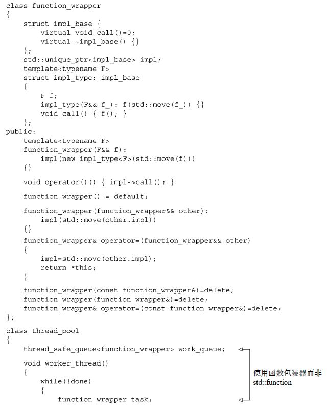
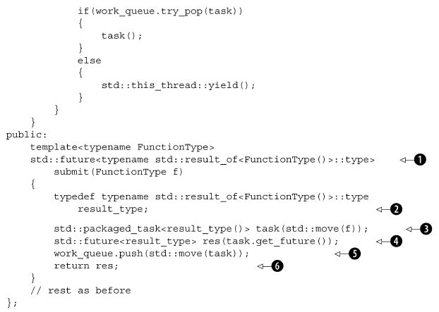
首先，修改后的submit()
函数❶返回一个std::future<>
对象来保存任务的返回值和允许调用者等待任务结束。这要求你知道任务函数f
的返回值，其值为std::result_of<>
，这个值来自于std::result_of<FunctionType()>::type
，这个值是不带参数地调用FunctionType
（如f
）的返回值。通过使用typedef
来将同样的std::result_of<>
表达式简写为result_type
❷。
然后将函数f
包装在一个std::packaged_task<result_type()>
中❸，因为f
是一个返回值类型为result_type
并且没有参数的函数或者可以调用的对象，正如我们推导的一样。你可以在将任务加入到等待队列之前❺通过std::packaged_task<>
得到一个future对象❹，然后返回这个future对象❻。注意你必须使用std::move()
来将任务加入到等待队列中，因为std:: packaged_task<>
不是可以拷贝的。为了处理这个特性，等待队列中现在存储的是function_wrapper
对象，而不是std::function<void()>
队列。
这个线程池的实现允许你等待你的任务结束以及得到任务的返回值。清单9.3展示了使用这个线程池来实现parallel_accumulate
函数。
清单9.3 使用可等待任务线程池的parallel_accumulate
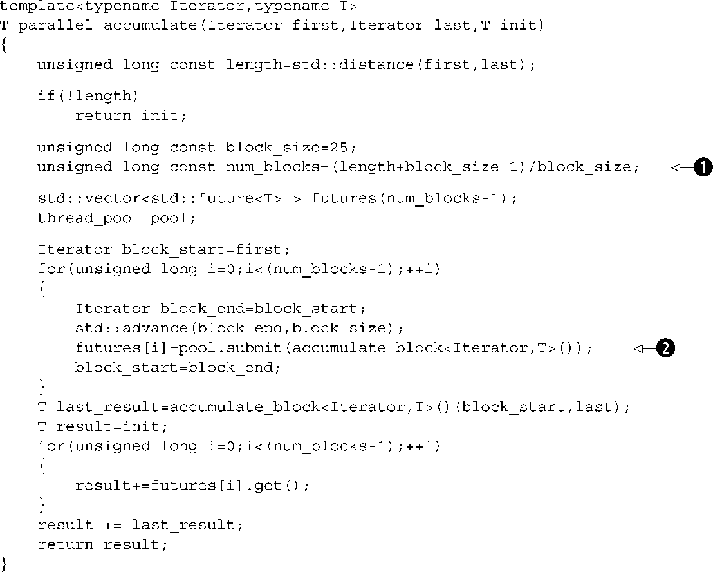
当你将清单9.3的代码跟清单8.4的代码比较的时候，存在几个地方需要注意的。首先，你是跟数据块的数量（num_blocks
❶）打交道，而不是多少个线程。为了能够充分使用线程池的扩展性，需要将任务划分为最小的值得并行的块。当线程池中只有少量线程时，每个线程需要处理许多数据块。但是当线程数量随着硬件的发展而增长时，被并发处理的数据块也增长。
你需要谨慎选择“最小的值得并行处理的块”。每个提交到等待队列中的子任务需要有一定的开销。这些开销包括提交到等待队列的开销，由工作线程去执行任务的额外开销，将结果通过std::future<>
返回给调用线程的开销。如果选择的块太小，在线程池中执行的速度可能比使用单线程的速度还要慢。
假定块的大小是合适的，你不需要担心打包任务，获得future或者存储std::thread
以供后面等待线程结束使用。线程池会处理这些细节。所有你需要做的只是调用submit()
来提交你的任务❷。
线程池也处理异常的安全事宜等。任何由任务抛出的异常会被传递到submit()
返回的future中。如果函数带着异常退出，线程池会丢弃掉还没有完成的任务然后等待线程池中的线程结果。
这个线程池在针对每个任务都是独立的时候工作得非常好。但是当任务之间有依赖关系的时候，这个线程池就不能很好地工作了。
在本书中，我们一直使用快速排序算法作为例子。快速排序的原理非常简单，给定一个哨兵元素，数据被划分为两个序列，一个序列的元素都在哨兵元素之前，另外一个序列是在哨兵元素之后。然后利用递归将两个序列排序，将两个子序列的结果连接起来得到排序的最终结果。在并行化这个算法时，你需要保证这些递归调用能够充分利用可用的并行性。
回顾第4章，当我首次介绍这个例子的时候，我们使用std::async
来运行其中的一个递归调用，让库来选择是使用一个新的线程来执行它还是当有关的get()
被调用时来异步执行它。这种方式能够很好地工作，因为每个任务或者是在自己的线程上执行，或者是当需要的时候会被调用。
在第8章当我们重新审视快速排序的实现时，你看到一个不同的结构。在那里我们使用一组固定数目的线程。在这种情况下，我们使用一个栈来保存需要排序的序列。因为每个线程将它正在排序的数据进行划分，它将一个新的数据块放到栈上，对另外一个数据集直接进行排序。在这个做法中，直观的等待其他块结束可能会死锁，因为你在使用一个线程来等待。很容易会出现所有线程都是在等待某个数据块被排序，没有一个线程在执行实际的排序过程。我们通过让线程在等待某个未排序的数据块的时候从栈上拿出一个待处理的数据来排序来解决这个问题。
如果你将第4章的例子中的std::async
替换成为本章你已经见到的简单线程池的时候，你会碰到同样的问题。线程池中只有有限数目的线程，他们可能都停在等待某个还没有被执行的任务。所以你需要一个与你在第8章见到的类似的解决方案，当你在等待你的数据块结束的时候去处理未完成的数据块。当你在使用线程池来管理任务列表以及它们关联的线程的时候，你不必去通过访问任务列表来完成这个。你需要做的是修改线程池的结构来自动完成这个。
最简单的访问来完成这个功能的是在线程池中增加一个新的函数来执行队列中的任务以及自己管理循环。高级线程池的实现可能会在等待函数添加逻辑来处理这种情形，有可能是通过给每个在等待的任务赋予优先级来解决。代码清单9.4展示了一个新的函数run_pending_task()
，代码清单9.5展示了使用这个函数来实现快速排序。
清单9.4 run_pending_task()的实现
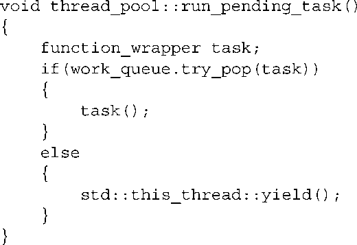
run_pending_stask()
的这个实现是从worker_thread()
函数的主循环中提升出来的，它现在被修改为提取的run_pending_task()
。它试图从队列中取出一个任务，如果成功则执行取出的任务，否则它放弃CPU，允许操作系统重新调度线程。清单9.5的快速排序的实现要比代码清单8.1的对应实现要简单很多，因为所有管理线程的逻辑被移动到了线程内部中。
清单9.5 基于线程池的快速排序的实现
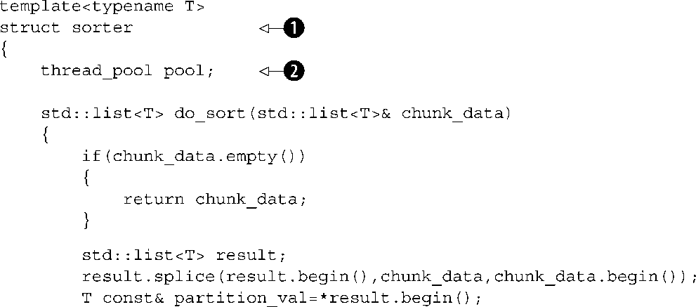
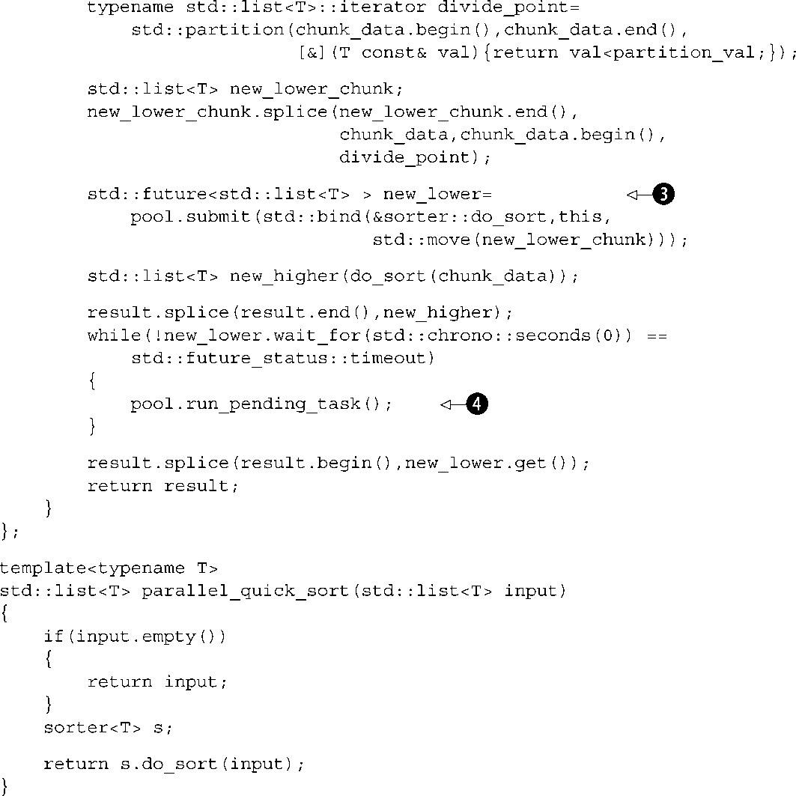
正如清单8.1一样，你将实际的排序工作放到了sorter
类模板中的成员函数do_sort()
中❶，虽然在这个例子中这个类知识简单的包装了thread_pool
的实例❷。
你的线程和任务管理要做的是向线程池提交一个任务❸和执行正在等待的任务❹。这个实现比清单8.1简单很多。在清单8.1中，你不得不显式的管理线程和栈中待排序的数据块。当向线程池提交任务时，你使用std::bind
将this
指针绑定给do_sort()
和提供要排序的数据。在这个例子中，你使用std::move
作用在new_lower_chunk
作为参数传进去，来保证数据是被移动而不是新的拷贝。
虽然现在的线程池解决了任务等待其他任务中的关键死锁问题，这个线程池仍然远远不是理想的。对于使用者来说，每个submit
的调用和每个run_pending_task
都访问同一个队列。在第8章你已经见过一个集合的数据被多个线程并发的访问会大大的降低性能，所以你需要别的方法来解决这个问题。
每次线程调用submit()
时，它向单个共享工作队列添加一个新的元素。类似的情形为，工作线程不停的从队列中取出元素来执行。这意味着随着处理器数目的增加，工作队列的竞争会越来越多，这会极大地降低性能。即使你使用无锁队列，虽然没有显式的等待，但是乒乓缓存会非常耗时。
避免乒乓缓存的一个方法是在每个线程都使用一个单独的工作队列。每个线程将新的任务添加到它自己的队列中，只有当自己队列为空的时候才从全局的工作队列中取任务。清单9.6展示了一个使用thread_local
变量来保证每个线程有一个自己的工作队列再加上一个全局的工作队列。
清单9.6 使用本地线程工作队列的线程池
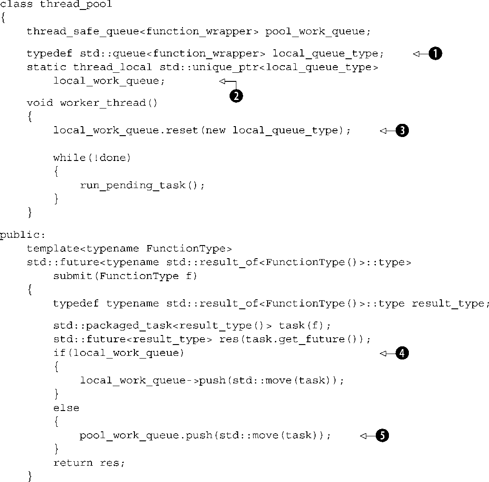
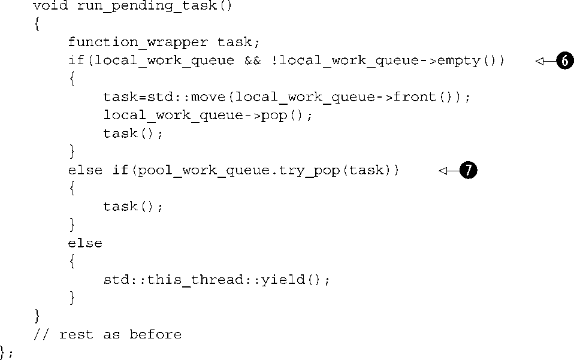
我们使用一个std::unique_ptr<>
来保存线程私有的工作队列因为我们不想让非线程池中的线程也持有一个❷；这个是在worker_thread()
中主循环之前进行初始化❸。std::unique_ptr<>
的析构函数保证了当线程退出的时候其工作队列会被适当地销毁。
submit()
函数会检查当前线程是否有一个工作队列❹。如果有，则说明当前线程是一个线程池中的线程，这是可以将任务添加到私有的工作队列中，否则像之前一样将任务加入到全局工作队列中❺。
在run_pending_task()
中有一个类似的检查❻，不过这次是检查私有队列中是否有任务。如果有，可以从队列中取出一个来处理。注意到私有队列可以是普通的std::queue<>
❶因为私有队列只被一个线程访问。如果私有队列中没有任务，则像之前一样从全局队列取任务❼。
这能够很好地降低对全局队列的竞争，但是当任务的分布是不平衡的，可能导致一些线程的私有队列中有大量的任务而另外一些线程则没有任务处理。比如，在快速排序中，只有最顶层的任务会被添加到全局工作队列中，因为其余的数据会放在某个工作线程的私有队列中。这跟使用线程池的初衷是相反的。
幸运的是，有一些办法来解决这个问题。只要允许线程在自己私有队列以及全局队列中都没有任务时从其他线程的队列中窃取工作。
为了允许一个空闲的线程执行其他线程上的任务，每个工作线程的私有队列必须在run_pending_task()
中窃取任务的时候可以被访问到。这要求每个工作线程将自己的私有任务队列向线程池注册或者每个线程都会被线程池分配一个工作队列。此外，你必须保证工作队列中的数据被适当的同步和保护，这样你的不变量是被保护的。
编写一个允许拥有队列的线程在一端push和pop同时其他线程在另外一端进行任务窃取的无锁队列是有可能的。但是实现这样一个队列比较复杂，超出了本书的范围。为了验证这个想法，我们使用互斥锁来保护队列的数据。我们希望任务窃取是一个不经常发生的时间，这样互斥元的竞争就不是那么激烈，这样一个简单的队列应当只包括一个极小的额外开销。清单9.7所示是一个简单的基于锁的实现。
清单9.7 允许任务窃取的基于锁的队列
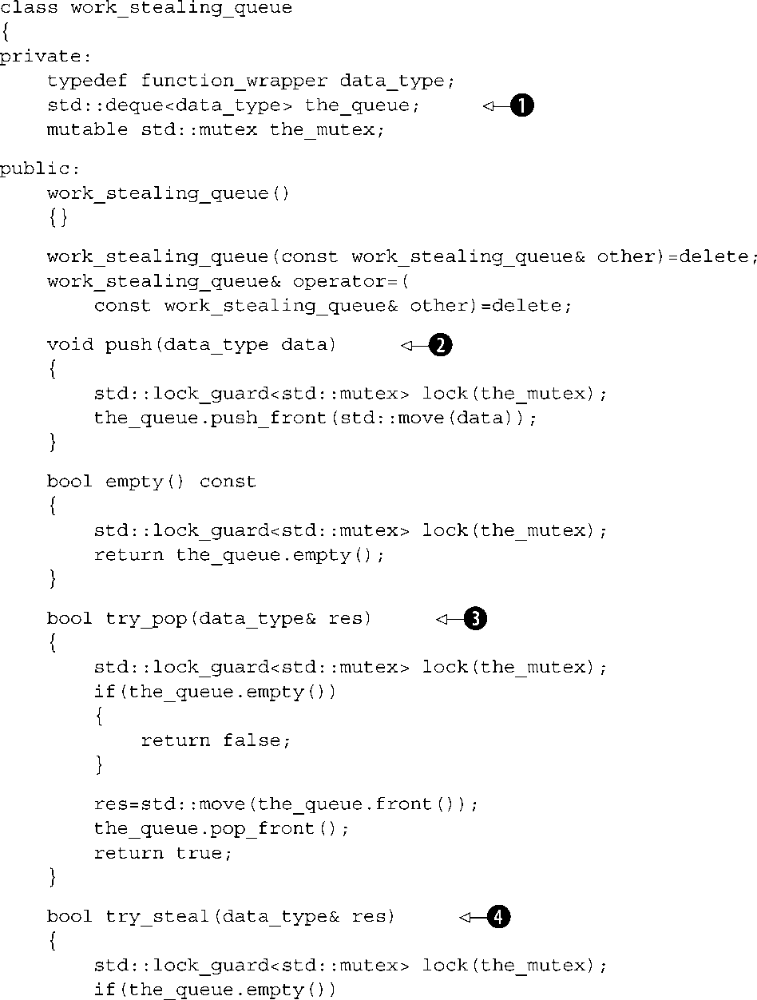
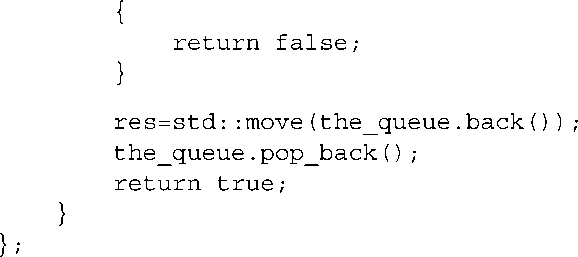
这个队列是一个对std::deque<function_wraper>
❶的封装，使用一个互斥锁来保护所有的访问。push()
❷和try_pop()
❸在队列头部操作，而try_steal()
❹在队列尾部操作。
这实际上意味着这个队列对于拥有线程来说是一个后进先出的栈。最近被放到队列中的任务会最先被取出来执行。从缓存的角度来说这可以提高性能，因为对比之前被放入队列中的任务，被取出的任务的数据更加有可能在缓存中。同样，这个队列能够很好的映射像快速排序之类的算法。在之前的实现中，每次调用do_sort()
将一个数据放到栈中然后等待它完成。通过处理最近放入的数据，你可以保证当前调用完成需要的数据块会比其他分支调用需要的数据块先处理好，这样可以减少活动的任务数目和总的栈空间使用量。try_steal()
从队列的另外一端取数据，这样可以最小化竞争。你同样可以使用第6章和第7章中的技术来实现并发调用try_pop()
和try_steal()
。
现在你已经有一个很好的允许窃取的工作队列，怎样把它使用在你自己的线程池中呢？清单9.8是一个可能的实现。
清单9.8 使用工作窃取的线程池
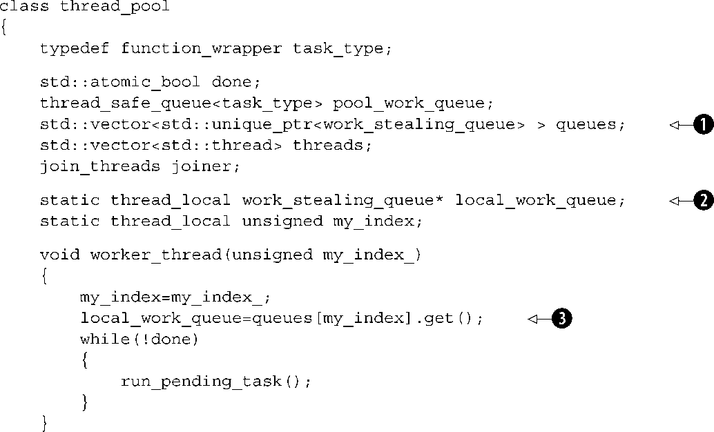
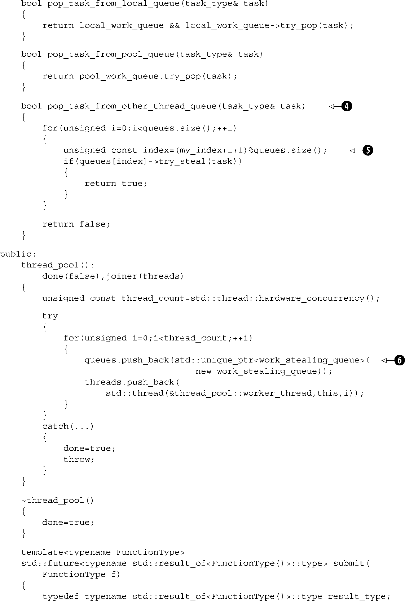
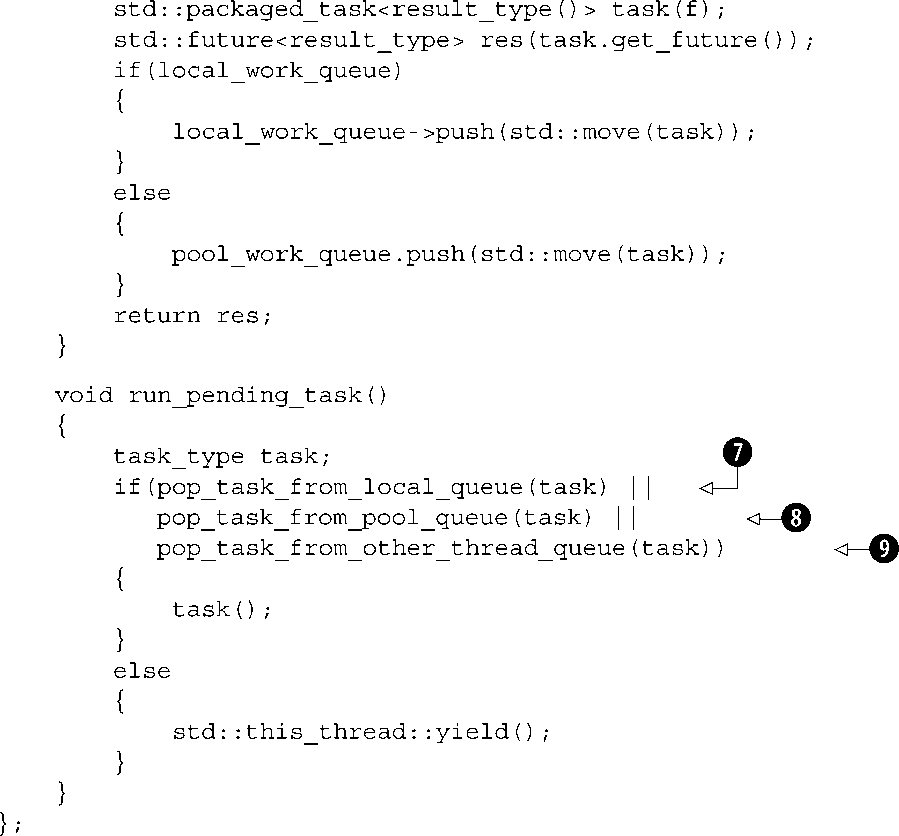
这个实现跟清单9.6中的实现非常类似。第一个区别在于每个线程都拥有一个work_stealing_queue
，而不是普通的std::queue<>
❷。当创建每个线程的时候，不是每个线程都创建一个自己的工作队列，而是线程池的构造器为其分配一个❻，这个队列是存储在一个工作队列的表中❶。队列的下标被传递给线程函数，然后被用来获得指向队列的指针❸。这意味着当试图为空闲线程窃取任务时线程池可以访问该队列。run_pending_task()
现在会试图从自己队列中取出任务❼，从池队列中取出任务❽，或是从其他线程的队列中取出工作❾。
pop_task_from_other_thread_queue()
❹遍历线程池中所有线程的队列，试图一次从每个队列中窃取一个任务。为了避免每个线程都从第一个线程的队列窃取，每个线程从列表中的下一个线程窃取，通过用自己队列的下标来偏移队列下标❺。
现在你有一个线程池可以应用在许多地方。当然，仍然有许多方法针对一些特别的用法去提高它。这个是留给读者的练习。一个没有被提及的方面是当线程被阻塞了，在等待如输入输出或者互斥锁，动态地修改线程池的大小来保证有最优的CPU使用率。
下一个“高级”的线程管理技术是中断线程。
在许多场景中，向一个长时间运行的线程发出一个信号告诉线程是停止执行的时候是一个很渴望的行为。这有可能是因为线程是一个线程池的工作线程而线程池正在被销毁，或者是因为线程正在执行的工作被用户显式地取消了，或者是因为其他一些原因。不管是何种原因，基本思想是一样的，你需要从一个线程发送一个信号告诉另外一个线程应该停止运行而不是一直执行到线程自然结束，你同样需要让线程适当的结束而不是简单的退出而造成线程池不一致的状态。
你当然可以为每种情况都设计一种单独的机制，但是这种做法没有通用性，引入许多重复工作。一种共有的机制不但可以让为后面的场景写代码变得容易，而且允许你写出能够被中断，不用担心在什么地方被使用的代码。C++11标准病没有提供这样的机制，但是建立这样的机制是相对直观的。让我们先看看怎样可以完成这个机制，从启动和中断一个线程的接口的角度开始。
首先让我们从可中断线程的接口开始。一个可中断线程的接口需要有哪些呢？在最基本的层次上，所有你需要的是跟std::thread
一样的接口，外加一个interrupt()
函数。
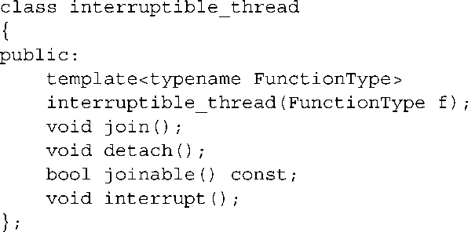
在内部，你可以使用std::thread
来管理线程本身，然后使用一些定制的数据结构来处理中断。从线程本身的角度来看中断是什么呢？在最基本的层面上你也许会说“我可以在这里被中断”，你想要一个中断点
。为了让这个能够不用传递额外的参数就能使用，需要一个简单的不带任何参数的函数：interruption_point()
。这意味着中断相关的数据结构需要使用一个thread_local
的变量来访问，这个私有变量是在线程启动的时候设置好的。这样当一个线程调用你的interruption_point()
函数的时候，它会检查当前运行的线程的数据结构。我们随后会给出interruption_point()
的实现。
这个thread_local
标志是你不能简单的使用std::thread
来管理线程的主要原因；它需要使用特殊的分配方法，使得interruptible_thread
实例可以访问，并且新启动的线程也能够访问。你可以通过在传递给std::thread
实际启动一个线程的之前包装一下，如清单9.9所示。
清单9.9 interruptible_thread的基本实现
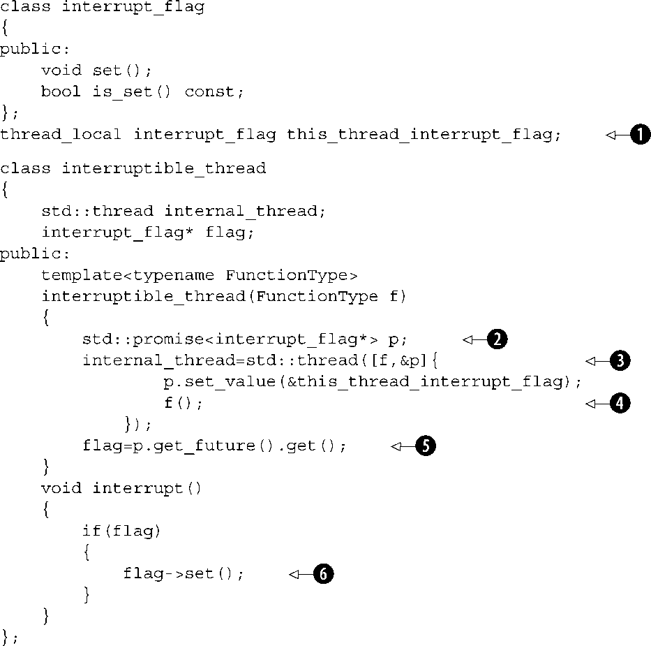
用户给定的函数f
被包装在一个lambda函数中❸。在此函数中，保存了一份f
的拷贝以及一个局部promise的引用p
❷。lambda函数在调用用户提供的函数之前❹为新的线程将promise设置为this_thread_interrupt_flag
（这个变量被声明为thread_local
❶）的地址。被调用的线程然后会等待跟promise相关联的future变得可用，然后存储在flag
成员变量中❺。注意到即使lambda函数是运行在新线程上面，并且持有一个对局部变量p
的应用，这是没有问题的。因为interruptible_thread
的构造函数会一直等待直到p
不再被新的线程引用。注意这个实现不负责处理等待线程结束或者分离线程。你需要保证当线程存在的时候或者被分离了，flag
标志被清理掉来避免危险的指针。
interrupt()
函数是一个相对直观的实现，如果你有一个合法的指针指向一个中断标志，你有一个线程可以中断，所以只要设置flag
就可以❻。线程中断标志设置后，有被中断的线程来决定怎么处理这个中断。
现在你可以设置中断标志了，但是如果线程不去检查它自身是否被中断的话不会给你带来任何好处。在最简单的情况下，你可以使用interruption_point()
函数来检查线程自身是否被中断；你可以当线程可以被安全的中断的时候调用这个函数，如果中断标志被设置的话它会抛出一个thread_interrupted
异常。
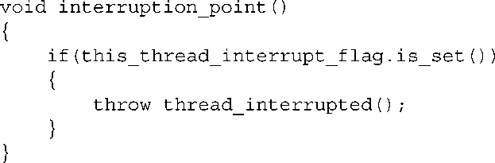
你可以在某个方便的点上调用这个函数。
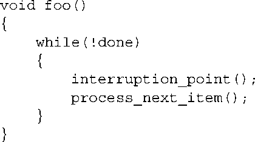
虽然这可以工作，但是它不完美。在一些中断线程最好的地方是它被阻塞住了，正在等待某个信号。这意味着线程为了调用interruption_point()
没有在运行！在这里你需要的是一个通过使用中断的方式来等待某个事情。
现在你可以通过在精心选定的位置上显式调用interruption_point()
来检测中断。但是当你想要一个阻塞等待的时间，如等待一个条件变量被通知，这不能给你多少帮助。你需要一个新的函数interruptible_wait()
，这个函数你可以为你想要等待的不同的事情重载。你可以知道怎样中断一个等待工作。我已经提到一个你可能想要等待的是条件变量，所以让我们从条件变量开始。为了能够中断一个条件变量的等待，你需要怎样做呢？最简单的事情是当你设置中断标志的时候通知条件变量，然后在等待的后面立即加上一个中断点。但是为了让这种方式可以工作，你不得不通知所有等待该条件变量的线程来保证你感兴趣的线程被唤醒。等待者们需要处理假的唤醒，使得其他线程能够将这个事件当成一个假的唤醒。interrupt_flag
结构需要能够存储一个指向条件变量的指针这样它可以在有调用set()
的时候被通知。interruptible_wait()
的一个关于条件变量的实现如下面清单9.10中的代码所示。
清单9.10 因std::condition_variable而遭到破坏的interruptible_wait函数实现
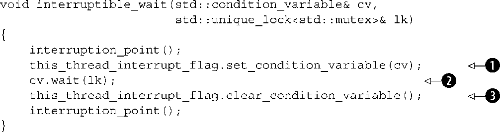
假定设置和清除一个带着中断标志的条件变量的函数存在，这个代码是优质而且简单的。它先检查中断，然后为当前线程关联一个带interrupt_flag
的条件变量❶，等待条件变量❷，清除关联的条件变量❸，然后再一次检查中断。如果线程是在等待条件变量的时候被中断的，调用中断的线程会广播条件变量将你唤醒，所以你可以检查中断。不幸的是，这份代码是不能工作
的。它存在两个问题。第一个问题相对比较明显。因为std::condition_variable::wait()
可能会抛出异常，所以你可能没有删除中断标志和条件变量的关联就退出了。这可以通过使用一个结构的析构函数来删除关联性来修复它。
第二个问题不是那么明显。这份代码中存在一个竞争条件，如果线程是在调用interruption_point()
后面被中断，那么条件变量是否跟中断标志关联已经不要紧了，因为线程不是在等待所以不能被条件变量唤醒
。你需要保证线程在上一次检查中断和调用wait()
之间不能被通知。在不改变std::condition_variable
内部结构的情况下，你只有一种方法来做这个，使用lk
持有的互斥锁来保持这块区域。这要求将其传递给调用set_condition_variable
。不幸的是，这又会产生一个问题，你需要传递一个生命周期未知的互斥锁给另外一个线程，那个线程在不知道它是否已经锁住互斥锁的情况下试图锁住。这有潜在的死锁可能，以及
试图锁住一个已经被销毁的互斥锁。如果不能可靠地
中断一个条件变量的等待，限制会非常大——你可以在没有特殊的interruptible_wait()
做得几乎一样好——那么你还有其他什么可选的方法呢？一个选项是在等待中放入一个等待的最大时间，给wait_for()
传递一个很小的时间间隔（如1毫秒）而不是使用wait()
。这给线程在看到中断前等待的时间设置了一个上限。如果你这样做，等待的线程会看到由定时器到期带来的大量的假唤醒，但是它不能轻易地带来帮助。清单9.11是这样的一个实现，还有对应的interrupt_flag
的实现。
清单9.11 在为std::condition_variable的interruptible_wait中使用超时
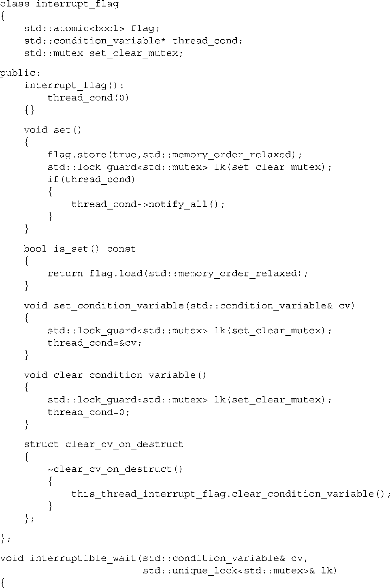
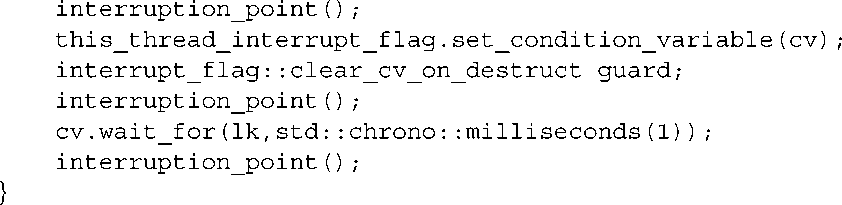
如果你有一个要等待的断言，那么1毫秒的超时会被完全隐藏在断言的循环中：
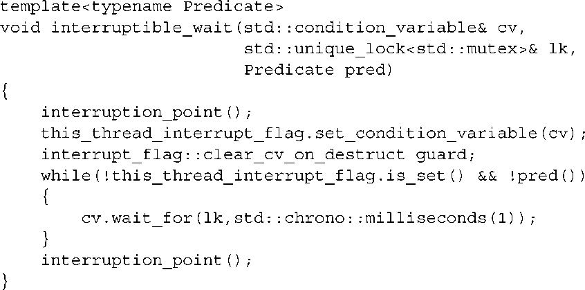
这会导致等待的条件被检查很多次，但是非常容易地用于代替wait()
函数调用。带定时器的变形也非常容易实现，只要等待一个给定的时间，如1毫秒，或者其他短时间。现在std::condition_variable
等待已久可以处理的，怎样等待一个std::condition_variable_any
变量呢？是与此相同，或者你能做得更好？
std::condition_variable_any
变量跟std::condition_variable
不同的是它可以跟任何
锁类型配合工作而不是只能跟std::unique_lock<std::mutex>
配合。结果是这会让事情变得简单，你可以更好地处理std::condition_variable_any
。因为它可以跟任何锁配合，你可以建立自己的锁类型用来加锁/解锁interrupt_flag
的内部函数set_clear_mutex
以及提供给等待调用的锁，如下面清单9.12所示。
清单9.12 为std::condition_variable_any而设的interruptible_wait
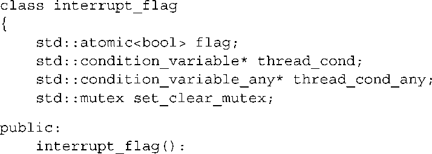
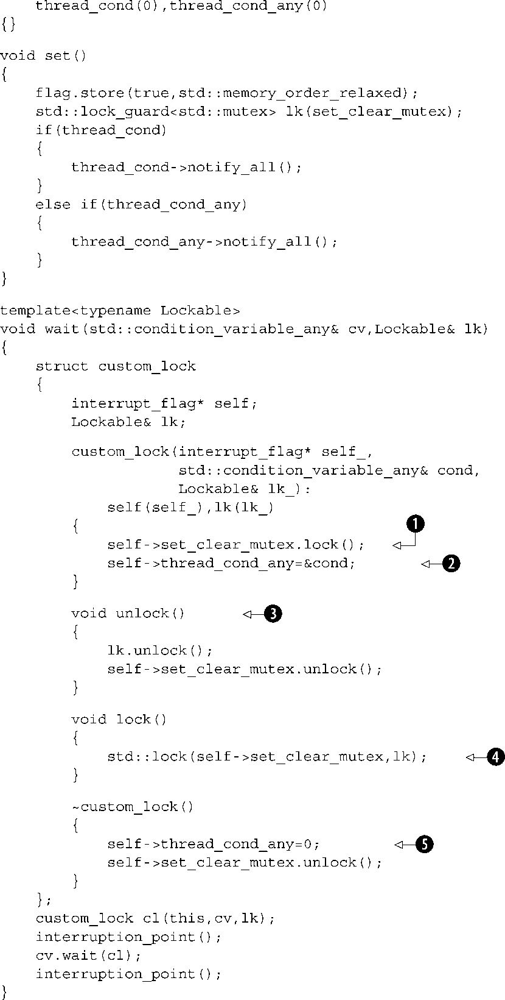
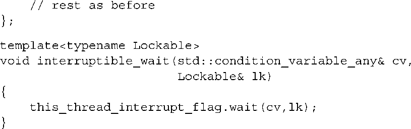
你的自定义锁类型在其构造函数❶中获得内部set_clear_mutex
锁然后设置指针thread_cond_any
指向传递给构造函数❷的std::condition_variable_any
变量。Lockable
引用保存起来为以后使用，这必须已经被锁住。现在你可以不用担心竞争来检查中断了。如果在这个点上中断标志被设置，它是在你获得set_clear_mutex
锁之前被设置的。当条件变量调用你的unlock()
时，你释放Lockable
对象以及内部的
set_clear_mutex
❸。此时允许试图中断你的线程在wait()
函数内部去获得set_clear_mutex
锁和检查thread_cond_any
指针，但是之前的却不能。一旦wait()
函数结束等待，它会调用你的lock()
函数，这个函数再次去获得内部的set_clear_mutex
和Lockable
对象的锁❹。现在你可以再次在你的custom_lock
的析构函数清理thread_cond_any
指针之前再次调用wait()
函数去检查中断❺。在custom_lock
的析构函数中你也会释放set_clear_mutex
锁。
到现在为止我们已经讨论了关于条件变量等待的情况，但是像互斥锁，future以及其他类似的阻塞原语的等待该怎样做呢？一般情况下，你不得不使用一个用在std::condition
变量的定时器选项，因为在不访问互斥元或者future的内部结构的前提下，没有办法来中断一个短时间的等待。但是使用定时器选项你知道你要等待什么，所以你可以在interruptible_wait()
函数中循环检查。作为一个例子，下面代码是针对std::future
的interruptible_wait()
重载版本。
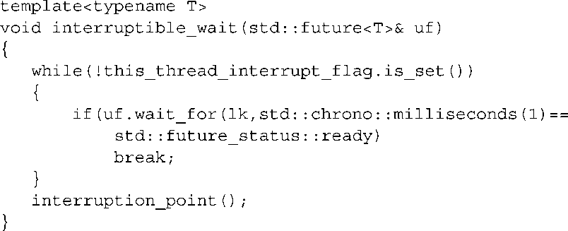
这会一直等到要么中断标志被设置，要么future已经准备好了，但是每次在future上执行阻塞等待1ms。这意味着，假定使用高精度的时钟，在中断请求被通知之前平均每次大概需要等待0.5ms。wait_for
函数经常会等待一整个时钟滴答，所以如果你的时钟滴答的间隔是15ms，你会每次至少等待15ms而不是1ms。取决于应用场景，这有可能会变得无可坚守。你总是可以降低定时器到期的时间间隔。但是其坏处是线程被唤醒更多次来检查中断标志，这会增加线程切换的额外开销。
到现在为止我们已经讨论了你应该怎样通过使用interruption_point()
和interruptible_wait()
函数检测中断，但是你应该怎样处理中断呢？
从被中断的线程的角度来看，一个中断只是一个thread_interrupted
异常。这可以像其他异常一样进行处理。典型的操作是你可以使用一个标准的catch
块来捕获它。
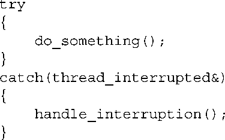
这意味着你可以捕获中断，用某些方法来处理它，然后继续执行。如果你这样做，另外一个线程再次调用interrupt()
，你的线程在调用一个中断点的时候会再次被中断。你可能想这样做如果你的线程是在执行一系列独立的任务的话。中断一个任务会导致那个任务被放弃，线程会继续执行列表中的下一个任务。
因为thread_interrupted
是一个异常，当调用能产生中断的代码段的时候所有异常安全的预防措施必须被执行来保证资源没有被泄露以及数据结构保持在一个一致的状态。经常发生的一种情况是让中断来结束线程，这种情况下你只要让异常抛出就可以了。但是如果你让异常传播的范围超过了std::thread
的构造器的话，std::terminate
将会被调用，整个程序都会被终止。为了避免被迫记得在每个你传递到interruptible_thread
的函数中放一个catch(thread_interrupted)
句柄，作为替代，你可以将此catch块放到你用来初始化interrupt_flag
的包装器中。这样做会让允许中断异常未被处理而传播变得安全，因为它接下来仅仅会终止单独一条线程。在interruptible_thread
构造函数中的线程初始化现在看起来是这个样子。
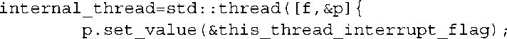
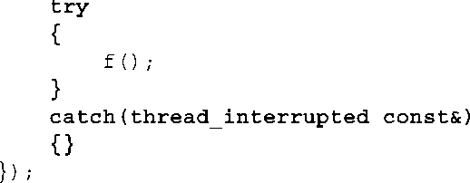
现在让我们看一个中断很有用的完整例子。
现在考虑桌面搜索应用。此应用也与用户进行互动，它需要监视文件系统的状态，识别所有的改变并且更新它的索引。为了避免影响GUI的响应性，这种处理就留给基础线程来完成。这个基础线程需要在应用的生命期始终运行，在应用初始化的时候就启用它，然后一直运行直到应用结束。对于这样一个应用通常只有在机器被关机的时候才会发生，因为此应用需要始终运行来保持最新的索引。在任何情况下，当应用结束的时候，就需要按顺序关闭基础线程，实现它的一种方法就是中断它。
清单9.13展示了这样一个系统的线程管理部分的一个简单实现。
清单9.13 在后台监视文件系统
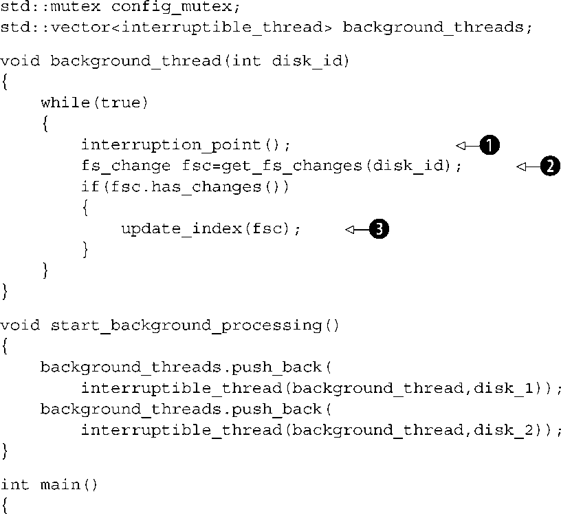
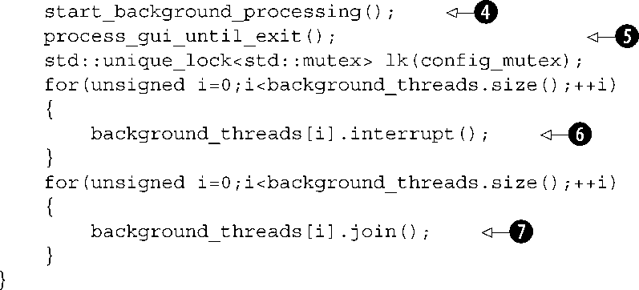
启动的时候，开始运行基础线程❹。然后主线程将基础线程与处理GUI一起处理❺。当用户要求应用退出的时候，中断这些基础程序❻，然后主线程等待每个基础线程在退出前完成❼。基础线程在一个循环里聚集，检查磁盘变化❷并且更新索引❸。每次循环它们通过调用interruption_point()
检查中断❶。
为什么你在等待前要中断所有线程？为什么不逐个中断然后再移动到下一个前进行等待？答案就是并发性。当线程被中断，它们不会立即结束，因为它们在退出前必须前进到下一个中断点然后运行析构函数调用和异常处理代码。通过立即联合所有线程，你就可以使中断线程等待，即使它仍然可以做它能做的有用的工作 ——中断别的线程。你等待直到不再有任何工作的时候（所有线程都被中断），这才允许所有线程被中断来并行地处理它们的中断并且更快结束。
这种中断的方法可以简单扩展为增加进一步中断调用或者通过一个具体代码块来禁止中断，但是这将留待读者考虑。
本章，我们考虑了许多“高级的”线程管理方法：线程池和中断线程。你已经看到使用本地工作队列如何减少同步管理以及潜在提高线程池的吞吐量，并且看到当等待子任务完成时如何运行队列中别的任务来减少发生死锁的可能性。
我们也考虑了许多方法来允许一个线程中断另一个线程的处理，例如使用特殊中断点和如何将原本会被中断阻塞的函数变得可以被中断。